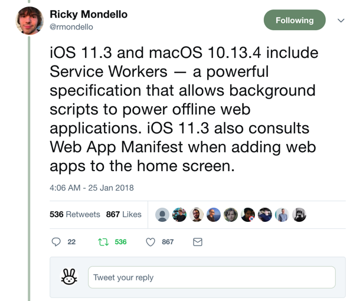

这次 Apple 真的出手了，也许 2018 年，PWA 真的会在国内爆发！
好消息
今天早上突然看到一条来自于 Apple Safari 团队开发者 Ricky Mondello 的 twitter 消息，其宣称 iOS 11.3 和 macOS 10.13.4 中的 Safari 将要支持 Service Worker 啦!
之前我的另一篇文章《如何看 Safari Technology Review 版本支持 Service Worker》已经分析过 Apple 的态度，对于 PWA 的态度是肯定的，但是今天看到这条消息的时候，还是非常意外，Apple 的进展太神速了，昨天 Apple 已经发布了 STR (Safari Technology Review) 48 版本，对于 Service Worker，STR 48 版本只是修复一些 Bug 以及在做一功能性的升级，具体可以查看 Apple 的 Release 信息。
在发布 STR 48 版本的同时，Ricky Mondello 高调宣布 Safari 对 Service Worker 的支持想必是已经开发完成等待发布了，基本可以确定 Apple 面向所有用户去支持的 Service Worker 已经板上钉钉了，对于所有 PWA 开发者来说这着实是个好消息，以后所有的 iOS 用户都能够体验到离线版本的 Web App，闭上眼睛想一想，画面简直太美了。
不止如此！iOS 11.3 和 macOS 10.13.4 的 Safari 还支持了添加到桌面，虽然现在的 Safari 版本是支持添加到主屏的，但是并没有按照 Web Manifest 标准实现，iOS 11.3 和 macOS 10.13.4 的 Safari 将会按照 Web Manifest 标准实现「添加到桌面」，具体是以什么样子呈现，我们拭目以待。
如果你很迫不及待的想体验一把，Apple 昨天还发布了 iOS 11.3 和 macOS 10.13.4 的 developer Beta 版本 https://9to5mac.com/2018/01/24/ios-11-3-beta-1/，其中包含支持 Service Worker 的 Safari 11.1 版本。不久的将来就会发布正式的 Beta 版本，然后我们就可以体验啦，随时注意最新动态，就算 iOS 11 虐的我的手机好惨，冲着 PWA 那也得好好试试 iOS 11.3。
写在最后
当然，除了 Service Worker 和 Manifest，Safari 还有很多其他的新特性支持，用来帮助开发者打造类 Native App 的 Web App，比如 Payment Request API, font-dispaly 等，除了激动，再无其他了，也不需要做任何诸如影响 Native App 分发利润等 balabala 的猜测了，我们就静静的等待 iOS 11.3 发布的那天。然后我再来评测吧。
只想说，赶紧拥抱 PWA 吧，没上车的赶紧上车，2018 年，PWA 要开车啦🚗!， 没上车的同学，可以关注百度的 Lavas， Lavas 能够帮助你快速搞定 PWA。
Lavas 官网：https://lavas.baidu.com
欢迎大家扫码关注我的微信公众号「江哥乱谈」，关注我更多的文章动态。

本文为原创文章，会经常更新知识点以及修正一些错误，因此转载请保留原出处，方便溯源，避免陈旧错误知识的误导，同时有更好的阅读体验。
转载请注明来源：https://zoumiaojiang.com/article/good-news-from-apple-for-pwa/